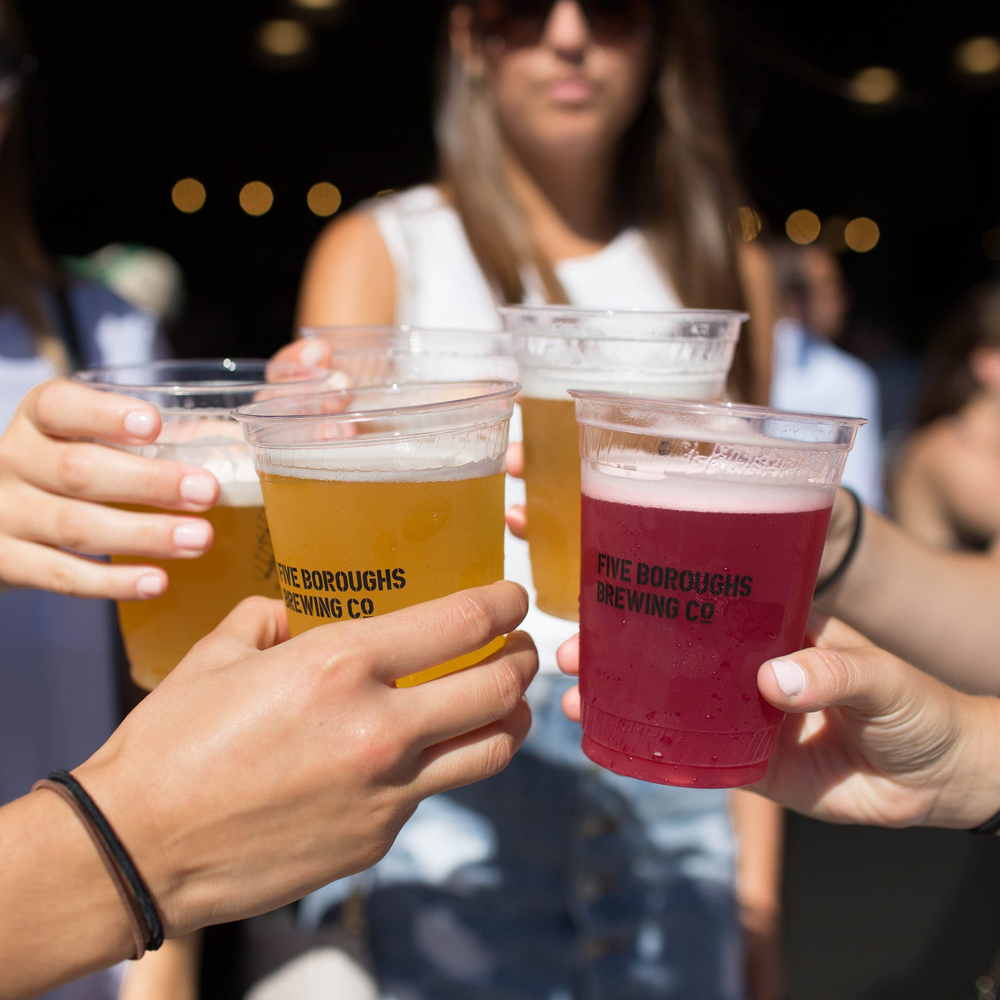

Five Boroughs Brewing Co. Makes craft beer that brings New York City together.
Are you over 21?
YES
NO
You must be of legal drinking age to join us. Sorry, kids.
Even when the Five Boroughs Brewing Co. taproom was just a fuzzy idea in our heads, we knew exactly what we wanted it to be. Maybe with all of the construction dust swirling around for more than a year, or the old railroad tracks that we found running through the space before we broke ground, we couldn’t exactly picture what it would look like all finished. But we always knew that the Five Boroughs taproom would be the beating heart of a brewery built for New York City.
Located at the front of the brewery on 47th Street in Sunset Park, our 2,500 square-foot taproom is a place where you can really unwind. We’re open Thursday through Sunday, and there’s a ton of space to just chill out, whether you’re with friends or a great book. At the taproom, you can get the core four Five Boroughs beers—Pilsner, IPA, Gose, and Hoppy Lager—that are also available in bars throughout the city. What we’re really excited about, though, and what we’ve always envisioned would be there, are those specialty taproom-only beers, which really make the trip to Sunset Park extra worth it.
We pour a whole range of smaller-batch and seasonal brews at the taproom, and showcase lots of different styles. This summer, those who visited us tried our Helles, Mango Saison, Mosaic Pale Ale, Double IPA, taproom-favorite Raspberry Gose, and more. And you better believe that there’s a lot of great stuff coming off the lines for fall—we’re already pouring the newest member in our fruited gose series, Pineapple Mango Gose, and soon we’ll be featuring collabs with local breweries, plus a new Festbier, Robust Porter, and the return of the Helles.
The thing is, though, that it’s not just about coming to the taproom and drinking the specialty beers (although, admittedly, that’s a big part of it—so make sure you grab a flight!). The taproom is really where our motto “united by beer” truly comes alive. We think of the taproom as a proving ground for our recipes: We’re a brewery here to serve all of New York City, and we can’t do our job perfectly unless we know exactly what our customers are loving and what they aren’t. Every conversation you have with our staff behind the bar, whether it’s Ryan, Kim, James, or anyone else, helps us know how to brew beer that truly reflects the tastes of New Yorkers.
That said, isn’t it time you swung by our taproom? There’s no time like fall in New York City, so come to Sunset Park, grab a flight, and tell us what you want to see in a beer made for you. That, for us, is a dream come true.